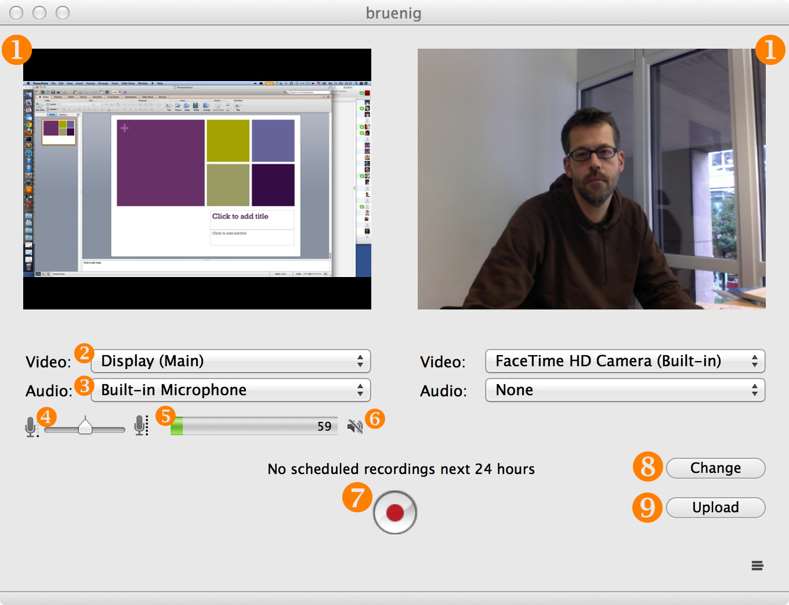

Recorder Interface
The recorder interface is made up of several blocks:
① Preview Windows
Two windows showing the currently recorded content of the left and right video input source
Input Sources
Some of these elements exist twice, one each for the first and second input source.
② Video Source Selector
Dropdown list showing all available video input sources (Default: None)
③ Audio Source Selector
Dropdown list showing all available audio input sources (Default: None)
④ Audio Volume Controller
Slider for adjusting the volume of the recording (Only visible if an audio source has been selected)
⑤ Audio Level Indicator
Indicator of the current volume level (Only visible if an audio source has been selected)
⑥ Mute Button
Button to silence the audio input source
Action Triggers
⑦ Record Button
Button to start the recording of a clip
⑧ Change Button
Button to open the settings drawer on the left
⑨ Upload Button
Button to start the manual upload of videos via the Upload Manager window
⑩ Log Stack
Link to open the Log Panel